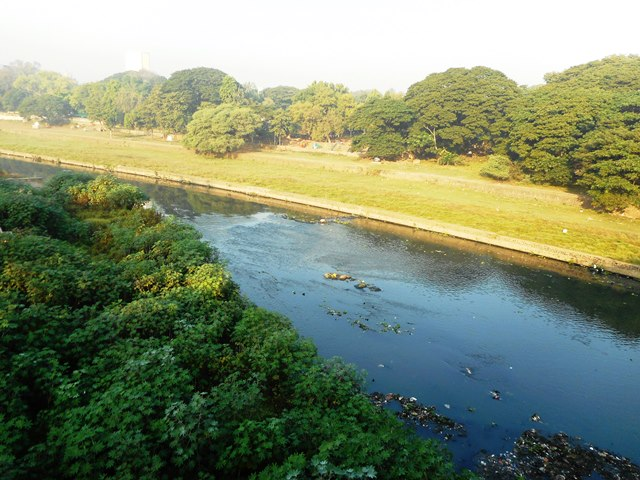

The story of the river goes back to the times of a King named Gajanak who sat for penance in the Sahaydri mountains. This made Indra, the King of the Gods, insecure. So he sent two apsaras down to earth to break the King's penance. Gajanak, enraged with the two apsaras, cursed them and turned them into rivers that became the Mula and the Mutha flowing through Pune. He later told them that they could attain salvation when they flowed down to meet and form the river Bhima.
The river originates in the western ghats at a village named Vegre and as it flows down into the city, it is dammed at two sites on its way--one at Panshet and the other at Khadakwasla, both of which are the main sources of water supply to the city. It meets the Mula in the middle of the city at a common landmark known as the Sangam bridge. The Mula Mutha eventually meet the river Bhima and later the Krishna before they drain into the Bay of Bengal.